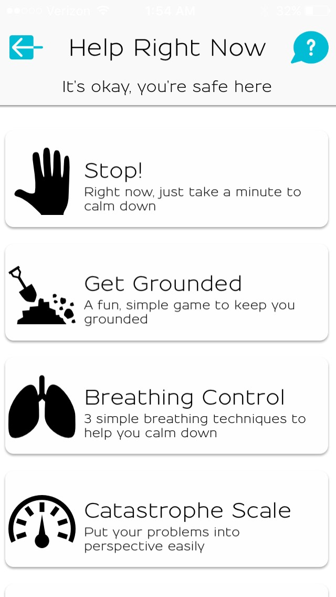
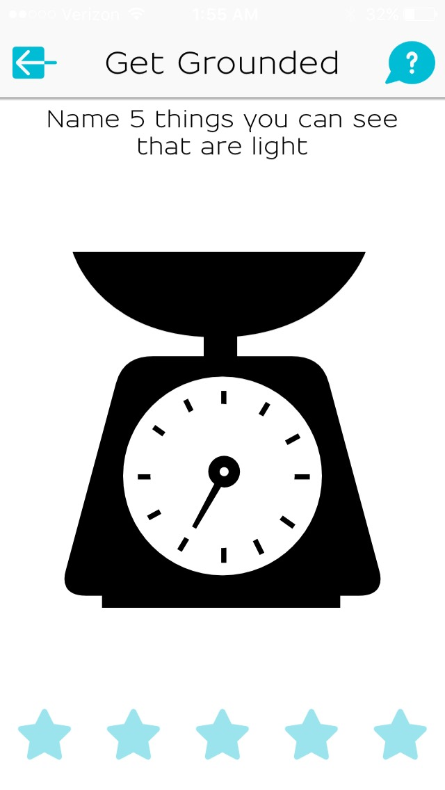
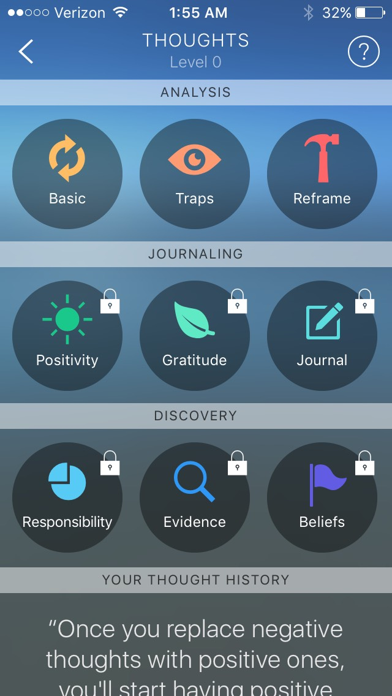
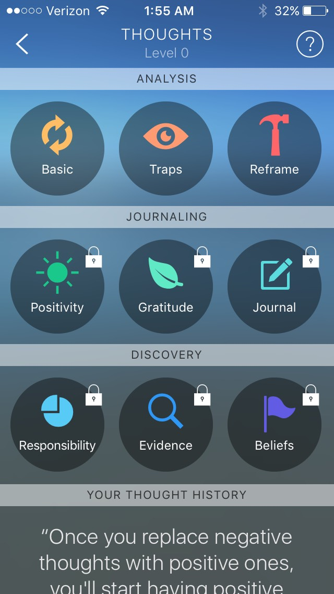

my topic of interest: a customizable self-care app
comparable extant media: what's up and pacifica
💖 what's up
What's Up is a free app featuring a diary with a mood tracker, anxiety-reducing activities, and forums. What's Up seems to emphasize its anxiety-reducing guided activities. A valuable resource that What's Up offers is a clear and easily-accessible "Help Right Now" section, featuring tools and activities for use during moments of distress. What's Up does not charge for any of its content, instead only asking for small donations in exchange for the ability to customize the appearance of the app. As is stated in the intro that appears before you enter the app for the first time, What's Up’s forum does not show the number of views, replies, or likes each post receives in order to prevent competition and to keep posters from feeling bad if their posts aren't receiving as much attention as are others. The app seems to be designed to be used in stressful situations, and some of the smooth animation of the interface has a soothing impact on the user. One grounding exercise, for example, features stars that turn smoothly as you tap them. The app is simple, because it needs to be understandable and usable even when the user is struggling. It could benefit from some clearer organization, because the nested navigation of some sections (including “Help Right Now”) can at times be a bit confusing. The app seems to have been made by one person, with the goal of being used when an individual needs (but cannot ask for) help. I have found its “Help Right Now” features to be useful in the classroom, as they can be used subtly yet effectively, without drawing much attention. The aforementioned introductory information of the app is kind and thoughtful, in addition to featuring some really pleasing transition animation, and really humanizes the experience, revealing something of the creator in a way that makes the app feel personal and makes the user feel directly cared for by one specific person. It is also worth noting that What’s Up does not require the creation of an account in order to access its features.
Seen below: the "Help Right Now" menu and a grounding exercise.
💖 pacifica
Pacifica, like What’s Up, features a diary with a mood tracker, anxiety-reducing activities, and forums. However, it seems to emphasize goal-making and progress-tracking over moment-of-crisis care, and features audio self-help lessons created by psychologists on the app's team, making it seem like more of a long-term resource, meant to improve quality of life and symptom management in the long-run. It charts and displays progress, and allows for the creation of to-do lists for specific goals. The to-do lists allow the user to rate how difficult a given task is likely to be, which accommodates different needs, strengths, and interpretations of difficulty, in addition to allowing for day-to-day user changes in feeling of ability. The app also allows the user to securely share activity and information with a therapist, which is one of its more interesting and unique features and again suggests an emphasis on long-term aid. Pacifica allows a selection of its features to be accessed for free, but requires a subscription for access to a wider range of features, making it less accessible for people of different economic backgrounds. Pacifica’s forums, unlike What’s Up’s, reveal information like number of views, likes, and comments, which creates the risk of what could otherwise be a helpful resource becoming instead a competition or a popularity contest. While Pacifica looks more polished than does What's Up, it is at times difficult to navigate, with a number of nested navigation menus that the user easily loses track of. Furthermore, though Pacifica’s interface is in places more polished, it also feels less personal, designed as it is by a team, rather than one individual. Requiring the creation of an account and the use of a username in order to access the app’s features, it also at times feels more like a social media network than a mental health aid.
Seen below: the mood tracker/diary and some thought exercises (those with locks require payment).
 
